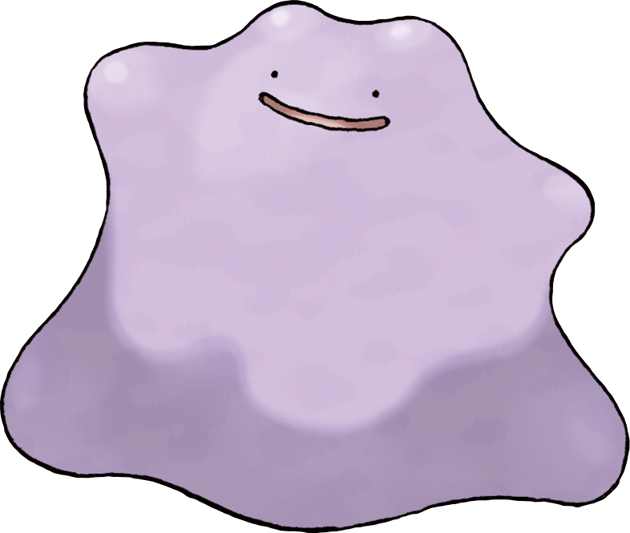
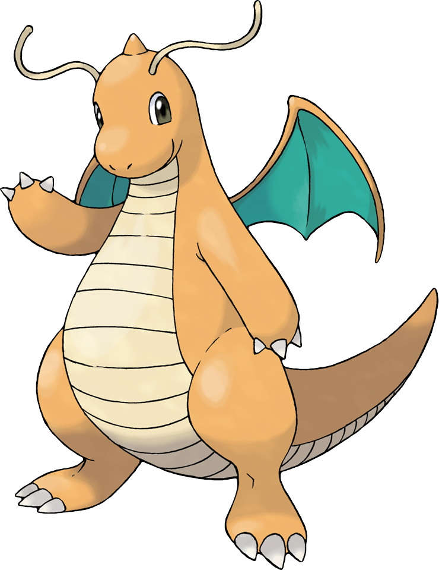

Il a une étrange graine plantée
sur son dos. Elle grandit avec
lui depuis la naissance.
Il a une étrange graine plantée
sur son dos. Elle grandit avec
lui depuis la naissance.

Son bulbe dorsal devient si gros
qu'il ne peut plus se tenir sur ses
membres postérieurs.
Sa plante mûrit en absorbant les
rayons du soleil. Il migre souvent
vers les endroits ensoleillés.

Il préfère les endroits chauds. En
cas de pluie, de la vapeur se forme
autour de sa queue.

En agitant sa queue, il peut élever
le niveau de la température à un
degré incroyable.

Il peut fondre la roche de son
souffle brûlant. Il est souvent la
cause de nombreux incendies.

Son dos durcit avec l'âge et devient
une super carapace. Il peut cracher
des jets d'écume.
Il se cache au fond de l'eau pour
guetter sa proie. Ses oreilles sont
des gouvernails.
Un POKEMON brutal armé de
canons hydrauliques. Ses puissants
jets d'eau sont dévastateurs.

Ses petites pattes sont équipées
de ventouses, lui permettant de
grimper aux murs.
Il est vulnérable aux attaques tant
que sa carapace fragile expose
son corps tendre et mou.
En combat, il bat des ailes très
rapidement pour projeter des
poudres toxiques sur ses ennemis.
Il se nourrit de feuilles dans les
forêts. L'aiguillon sur son front
est empoisonné.
Incapable de se déplacer de
lui-même, il se défend en
durcissant sa carapace.
Il vole à très grande vitesse. Il se
bat avec les dards empoisonnés
de ses bras.
Il est souvent vu dans les forêts. Il
brasse l'air de ses ailes près du
sol pour projeter du sable.
Il protège son territoire avec ardeur
et repousse à coups de bec tout
intrus.
Il chasse en survolant la surface de
l'eau et en plongeant pour attraper
des proies faciles.
Sa morsure est très puissante. Petit
et rapide, on en voit un peu partout.
Si ses moustaches sont coupées, il
perd le sens de l'équilibre et
devient moins rapide.
Il chasse les insectes dans les
hautes herbes. Ses petites ailes
lui permettent de voler très vite.
Ses ailes géantes lui permettent de
planer si longtemps qu'il ne se
pose que très rarement.
Il se déplace en silence pour
dévorer des oeufs de ROUCOOL
ou de PIAFABEC.
Les motifs féroces peints sur son
corps changent selon son
environnement.

Quand plusieurs de ces POKÉMON
se réunissent, ils provoquent de
gigantesques orages.
Il doit garder sa queue en contact
avec le sol pour éviter toute
électrocution.
Il s'enterre dans les régions arides
et désertiques. Il émerge seulement
pour chasser.
Il se roule en boule hérissée de
piques s'il est menacé. Il peut ainsi
s'enfuir ou attaquer.
Ce POKEMON est hérissé de dards
empoisonnés. Les femelles ont des
dards plus petits.
La corne de la femelle grandit
lentement. Elle préfère attaquer
avec ses griffes et sa gueule.
Ses écailles très résistantes et son
corps massif sont des armes
dévastatrices.
Son ouïe très fine l'avertit du
danger. Plus ses cornes sont
grandes, plus son poison est mortel.
Très agressif, il est prompt à
répondre à la violence. La corne
sur sa tête est venimeuse.
Sa queue est une arme redoutable,
il s'en sert pour attraper sa proie
et lui broyer les os.
Très recherché pour son aura
mystique, il est très rare et ne vit
que dans des endroits précis.

Une sorte de petite fée très rare.
Il se cache en apercevant un être
humain.
Il n'a qu'une seule queue à la
naissance. Sa queue se divise à la
pointe au fil des ans.
Très intelligent et rancunier.
Attrapez-lui une de ses queues et
il vous maudira pour 1000 ans.

Quand ses yeux s'illuminent, il
chante une mystérieuse berceuse.
En cas de danger, il gonfle d'air
son corps doux et potelé dans
des proportions gigantesques.
Se déplace en colonie dans les
endroits sombres. Il s'oriente
grâce aux ultrasons.
Une fois son adversaire mordu, il
absorbera son énergie même s'il
devient trop gros pour voler.
Pendant la journée il se cache sous
terre. Il s'aventure la nuit pour
planter des graines.
Le liquide qui s'écoule de sa
bouche est comestible. Il sert à
appâter sa proie.
Plus ses pétales sont grands, plus
ils contiennent de pollen toxique.

Les champignons sur son dos se
nourrissent des nutriments de leur
hôte insectoïde.
Une symbiose entre un parasite et
un insecte. Le champignon a pris
le contrôle de son hôte.
Il vit à l'ombre des grands arbres où
il mange des insectes. Il est attiré
par la lumière.
Les motifs ocre de ses ailes
changent en fonction de son type
de poison.
Il vit à un mètre sous la terre et
se nourrit de racines. Il apparaît
rarement à la surface.
Un groupe de TAUPIQUEUR. Il
crée des séismes en creusant à
plus de 100km de profondeur.
Il adore les pièces de monnaie. Il
hante les rues à la recherche de
pièces oubliées par les passants.
Très apprécié pour sa fourrure, il
est difficile à apprivoiser en raison
de son caractère rétif.
Il distrait ses ennemis avec des
grimaces débiles et les attaque
ensuite avec ses pouvoirs psy.
Il nage avec élégance le long des
côtes. Il est souvent confondu
avec le monstre japonais: Kappa.
Il se met en colère très vite. Calme
ou furieux, son humeur change
d'une seconde à l'autre.
Agressif et teigneux, il poursuit son
gibier jusqu'à épuisement complet.
Pour protéger son territoire il aboie
et mord jusqu'à ce que les intrus
s'enfuient.
Un POKEMON très recherché pour
sa grâce légendaire. Son pas
élégant semble glisser sur le vent.
Il court mal avec ses petites pattes.
Il préfère nager que de se tenir
debout.
Amphibie, il peut vivre à l'air libre
mais il doit rester mouillé pour
survivre.
Excellent nageur, il pratique le
crawl ou la nage papillon mieux
qu'un champion olympique.
Son don de télépathie lui permet
de sentir le danger et de se
TELEPORTER en un lieu sûr.
Son corps émet des ondes alpha
provoquant des migraines chez
ceux qui se trouvent à proximité.
Son super cerveau peut effectuer
des opérations à la vitesse d'un
ordinateur. Il a un Q.I. de 5000.
Il adore la musculation. Il pratique
les arts martiaux pour devenir
encore plus fort.

Son corps est si puissant qu'il lui
faut une ceinture de force pour
équilibrer ses mouvements.
Ses coups de poing sont si puissants
qu'ils font voler ses adversaires
jusqu'à l'horizon.
Un POKEMON carnivore qui se
nourrit de petits insectes. Ses
racines servent d'attaches.
Il crache de la POUDRE TOXIK
pour immobiliser sa proie et il
l'achève avec de l'ACIDE.
Il vit en colonie dans la jungle
mais personne n'en est jamais
revenu vivant.
Flottant au bord des côtes, les
pêcheurs se font souvent arroser
d'acide quand ils en accrochent un.
Ses tentacules sont rétractés au
repos. En situation de chasse, ils
s'allongent.
Il vit dans les plaines ou les
montagnes. On le confond souvent
avec un petit caillou.
Pour se déplacer il dégringole le
long des pentes. Il pulvérise tout
obstacle sur son passage.
Son corps de pierre est
indestructible. Il peut supporter des
explosions de dynamite.
Ses sabots sont plus résistants que
le diamant. Il peut aplatir n'importe
quoi en le piétinant.
Doté d'un esprit de compétition, il
poursuit toute créature rapide pour
faire la course.
Très lent et endormi, il lui faut
5 secondes pour ressentir la
douleur d'une attaque.
Le KOKIYAS accroché à la queue
du Ramoloss se nourrit des restes
de son hôte.
Il contrôle la gravité pour pouvoir
voler. Il attaque avec des
CAGE-ECLAIR.
Constitué de MAGNETI reliés les
uns aux autres, il apparait lorsque
le soleil brille.

Il utilise le poireau qu'il a dans la
bouche comme une épée d'acier.
Cet oiseau vole très mal mais court
très vite. Il laisse de gigantesques
empreintes de pas.
Il élabore des plans complexes avec
ses trois cerveaux. Une de ses têtes
reste toujours éveillée.
La corne sur son front est très
résistante. Elle lui sert à percer
des blocs de glace.
Il emmagasine la chaleur dans son
corps. Il peut nager sous l'eau glacé
à plus de 8 noeuds.
Vivant dans des tas d'ordures, il se
nourrit des déchets polluants rejetés
par les usines.

Il est recouvert d'une épaisse
couche toxique. Il laisse une trace
empoisonnée derrière lui.
Protégé par une carapace très
résistante, il est vulnérable quand
celle-ci s'ouvre.
Une fois menacé, il envoie de
rapides volées de dards. Sa partie
interne est inconnue.
Ce POKEMON gazeux longe ses
victimes dans un profond sommeil
sans qu'elles ne s'en aperçoivent.
Il peut se glisser à travers les murs
comme une créature d'une autre
dimension.
Les nuits de pleine lune, il imite
l'ombre des passants et se moque
de leur effroi.
Les parties en pierre de son corps
durcissent pour devenir comme un
diamant de couleur noire.
Il endort ses ennemis et dévore
leurs songes. En pangeant de
mauvais rêves, il devient malade.
En fixant son adversaire, il
s'assaille avec les attaques PSY
d'HYPNOSE et de CHOC
MENTAL.
Ses pinces sont des armes très
puissantes. Elles lui servent aussi
à garder son équilibre
Son énorme pince peut déployer
une puissance de 10000 CV. Mais
elle est très encombrante.
Vivant dans les centrales, ce
POKEMON survolté est souvent
confondu avec une POKE BALL.
Il emmagazine des quantités
énormes de courant électrique sous
pression pouvant exploser.
Souvent pris pour des oeufs, il
attaquent en groupe comme un
essaim.
On raconte que si une de ses têtes
se détache, elle se transforme en
un NOEUNOEUF.
Il ne retire jamais son casque en os.
Personne n'a jamais vu le visage de
ce POKEMON.
L'os qu'il tient dans sa main est une
arme. Il peut le lancer avec adresse
pour assomer sa proie.
S'il est pressé, ses jambes
s'allongent progressivement. Il
court alors très rapidement.
Il distribue des séries de coups de
poing rapides comme l'éclair,
invisibles à l'oeil nu.
Il peut projeter avec sa langue
comme un caméléon. Tout contact
avec elle provoque une irritation.
Son corps, constitué de gaz
toxiques et instables, peut exploser
soudainement.
Deux SMOGO peuvent combiner
en un SMOGOGO en mélangeant
leurs gaz.
Avec une ossature 1000 fois plus
résistante que celle de l'homme,
ses charges sont dévastatrices.

Son épiderme très épais lui permet
de survivre dans un environnement
de plus de 2000 degrès.
Un POKEMON rare et difficile à
capturer qui porte chance et
bien-être à son possesseur.

Son corps est recouvert de lianes
similaires à des algues. Elles
bougent quand il marche.
Son enfant ne quitte la poche
ventrale protectrice qu'à l'Age
de 3 ans.
Réputé pour tirer avec précision un
jet d'encre sur des insectes volants
depuis la surface de l'eau.

Il peut nager à l'envers en agitant
ses petits nageoires pectorales.
Sa queue ondule gracieusement
comme un voile. On l'appelle :
Reine des Océans.

Pendant la saison des amours, on
peut le voir nager dans les rivières
et les lacs.
Un POKEMON bien curieux qui
peut régénérer ses appendices
sectionnés lors d'un combat.
Son coeur brille des couleurs de
l'arc-en-ciel. On raconte que c'est
une pierre précieuse.
Dérangez-le pendant qu'il mime et
il se battra en distribuant des volées
de claques.
Rapide et agile comme un ninja, il
se déplace si vite qu'il crée l'illusion
d'être en groupe.

Il ondule ses hanches en marchant
en entraine les gens dans des danses
frénétiques.
Vivant dans les centrales, il
provoque des pannes de courant
en s'aventurant en ville.
Son corps en fusion brûle d'une
flamme orangée, le rendant
invisible dans le feu.
Quand il ne peut écraser sa proie
avec sa pince, il la secoue et
l'envoie dans les airs.
Une fois sa cible en vue, il la
charge furieusement en fouettant
l'air de sa queue.
Autrefois, il était beaucoup plus
puissant que cette créature
minablement faible.
Gigantesque et maléfique, il est
capable de raser une ville dans un
accès de rage terrifiante.
Ce POKEMON en voie d'extinction
peut transporter des passagers sur
son dos par delà les océans.

Il est capable de copier le code
génétique d'un ennemi pour se
transformer en son double.
Sa génétique particulière lui permet
d'évoluer s'il est exposé aux
radiations d'une pierre.
Il vit au bord de l'eau. Sa queue lui
donne l'apparence d'une sirène.
Il se charge d'électricité statique
pour envoyer des décharges de
10000 volts.
Il peut accumuler suffisamment de
chaleur pour atteindre une
température de 900 degrès.
Un POKEMON fait de programmes
et d'algorithmes. Il peut survivre en
milieu virtuel.
Disparu depuis longtemps, il peut
être réanimé génétiquement à partir
d'anciens fossiles.
Un POKEMON préhistorique qui
disparut quand sa coquille devint
trop lourde à déplacer.
Un POKEMON reconstitué à partir
d'un fossile trouvé dans un site
préhistorique.
Sa forme élancée lui permet de
nager rapidement. Il lacère sa proie
avant d'en absorber la vie.

Un POKEMON préhistorique qui
attaque son ennemi à la gorge avec
ses crocs acérés.
Très paresseux, il ne fait que
manger et dormir. Plus il est gros,
plus il devient fainéant.
Le légendaire oiseau des glaces. On
dit qu'il apparait aux gens perdus
dans les sommets.
L'oiseau légendaire de la foudre. Il
surgit hors des nuages en lançant
d'énormes éclairs.
Le légendaire oiseau du feu. Une
pluie de flammes surgit à chaque
battement de ses ailes.

Longtemps considéré comme
légendaire, une colonie fut
découverte dans les océans.
Un POKEMON légendaire plein
de charme. Il peut contrôler les
variations climatiques.

Un POKEMON marin
extrêmement rare. On dit qu'il
est aussi intelligent de l'homme.
Il est le fruit de nombreuses
expériences génétiques horribles
et malsaines.
Unique et rare, son existence est
remise en cause par les experts.
Peu nombreux sont ceux qui l'ont
vu.